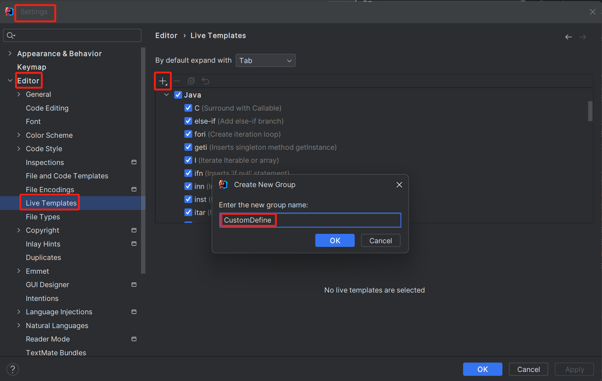
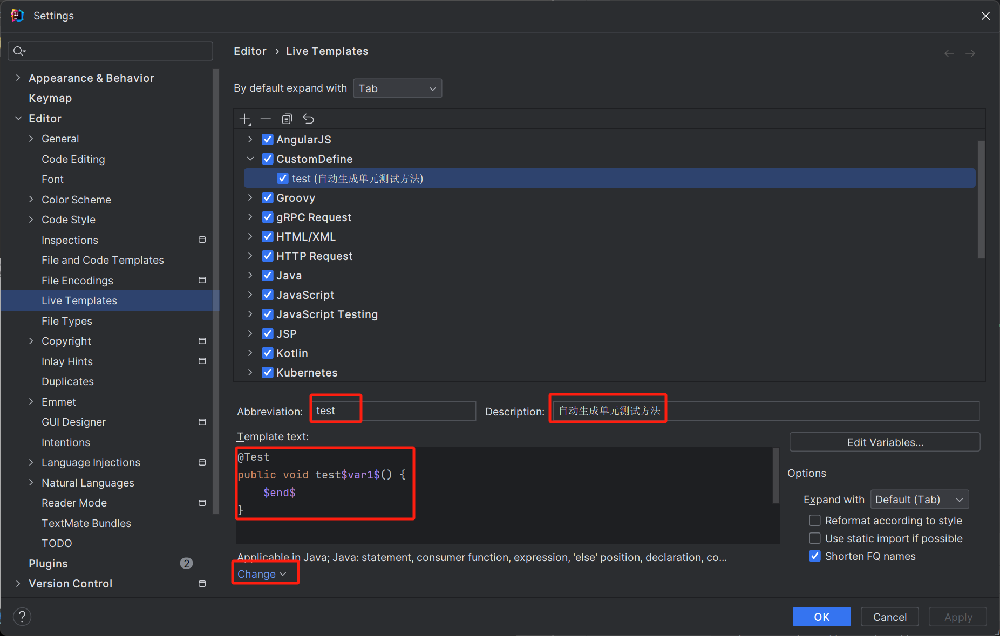

Java面向对象编程
6 面向对象编程（基础）
学习面向对象的三条主线
- Java类及类的成员：（重点）属性和方法、构造器；（熟悉）代码块、内部类
- 面向对象的特征：封装、继承、多态、（抽象）
- 其他关键字的使用：this、super、package、import、static、final、interface、abstract等
面向对象是软件开发的一类编程风格、开发范式。还有面向过程、指令式编程、函数式编程类 class 是具有相同特征的事务的抽象描述，是抽象的，概念上的定义
对象 object 是实际存在的该类事务的每个个体，是具体的，也称为实例 instance
面向对象程序设计的重点是类的设计，类的设计也就是类的成员的设计
对象在内存中的分配
- 栈：方法内定义的变量
- 堆：new 出来的结构（数组实体、对象实体），包括对象的属性
- 方法区：存放类的模板
变量根据在类中声明的位置的不同，分为成员变量和局部变量
方法是类或对象行为特征的抽象，用来完成某个功能操作。
将功能封装为方法目的是：实现代码重写、减少冗余、简化代码
Java中的方法不能独立存在，所有方法必须定义在类里
1
2
3权限修饰符 [其他修饰符] 返回值类型 方法名(形参列表) [throws 异常类型] { // 方法头
// 方法体
}- []中不是必须得
权限修饰符：public、protected、缺省、private
方法内不能定义方法
方法的重载
- 方法重载overload：用一个类中，方法名相同，参数列表不同。满足以上特征的多个方法，彼此之间构成方法的重载。
- 参数列表不同指的是参数个数，参数类型，参数顺序
可变个数形参的方法
jdk5.0引入的特性
在调用方法时，方法形参类型确定，个数不确定，此时可以使用可变个数形参的方法
1
(参数列表 ... 参数名)可以为0个、1个或多个
可变个数形参只能有一个，且在参数列表最后
可变个数形参的方法与同一个类中，同名的多个方法之间可以构成重载，优先执行固定参数，没有匹配的再执行可变参数
特例：可变个数形参的方法与同一个类中方法名相同，且与可变个数形参的类型相同的数组参数不构成重载，认为是一个方法。
在方法内对可变个数形参的访问就当数组参数访问即可
方法的值传递机制
- 值传递：存什么传什么，存数据值就传数据值，存地址值就传地址值
递归方法
- recursion method：方法自己调用自己的现象称为递归方法
- 分类
- 直接递归：A调用A
- 间接递归：A调用B，B调用A，...
- 递归一定要向“已知方向”递归，否则这种递归变成无穷递归，类似于死循环。最终发生“栈内存溢出”
- 递归调用会占用大量的系统堆栈，内存耗用多，在递归调用层次多时速度要比循环慢得多，所以在使用递归时要慎重
- 在要求高性能的情况下尽量避免使用递归，递归调用即花时间又耗内存。考虑使用循环迭代
package&import
package关键字
package 包，用于指明该文件中定义的类、接口等结构所在的包。
一个源文件只能有一个声明包的package语句
package语句作为Java源文件的第一条语句出现，若缺省该语句，则指定为无名包
包名：通常为公司域名的倒置，不要起名java.**
包对应于文件系统的目录，package语句中用"."来指明包的层次
同一个包下可以声明多个结构（类、接口），但是不能定义同名的结构。不同的包下可以定义同名的结构
JDK中主要的包
1
2
3
4
5
6
7java.lang:包含一些Java的核心类，如String、Math、Integer、System和Thread等
java.net:与网络相关的操作的类和接口
jave.io:包含能够提供多种输入、输出功能的类
java.util:工具类，定义系统特性、接口的集合框架类、使用与日期日历相关的函数
java.text:java格式化相关类
java.sql:java进行JDBC数据库编程的相关类/接口
java.swt:构成抽象窗口工具集的多个类
import关键字
import 导入，为了使用其他包中的Java类，需要使用import语句来显式引入指定包下所需要的类
1
2
3
4// 导入指定类
import 包名.类名;
// 导入某包下的所有结构
import 包名.*;如果是java.lang包下的，就可以省略import语句
如果已经导入某包下的类，但是要使用该包下子包的类的话，仍需要导入
如果在代码中使用不同包名下的同名的类，就需要使用类的全类名的方式指明调用的是哪个类
了解内容：
import static 组合的使用，调用指定类或接口下的静态的属性或方法
1
2import static java.lang.System.out;
out.println("Hello World");
封装性
高内聚、低耦合
- 内聚：一个模块内各个元素彼此结合的紧密程度，意味着重用和独立
- 耦合：一个软件结构内不同模块之间互连程度的度量，意味着多米诺效应
- 高内聚：类的内部数据操作细节自己完成，不允许外部干涉
- 低耦合：仅暴露少量的方法给外部使用，尽量方便外部调用
encapsulation：把客观事物封装成抽象概念的类，并且类可以把自己的数据和方法只向可信的类或对象开放，向没必要开放的类或者对象隐藏信息。（该暴露的暴露，该隐藏的隐藏）
Java中使用权限修饰符实现了数据封装，有4种权限修饰符：public、protected、缺省、private
使用4种权限修饰符来修饰类及类的内部成员，当这些成员被调用时，体现可见性的大小
修饰符 本类内部 本包内 其他包的子类 其他包非子类 private √ × × × 缺省 √ √ × × protected √ √ √ × public √ √ √ √ 外部类：只能使用public、缺省修饰
- 不能被private修饰是因为，这个类不能创建实例，属性和方法不能被访问，毫无意义
- 不能被protected修饰，其他包想要访问该类就必须是该类的子类，但是非子类无法访问，无法继承
类的内部成员：4种修饰权限
IDEA右键生成可以自动生成getter和setter方法
构造器
constructor
构造器作用
- 搭配new关键字，创建类的对象
- 在创建对象时，可以给对象的相关属性赋值
格式
1
权限修饰符 类名(形参列表){}- 4种修饰符都可以修饰
如果当前类中没有显式提供任何构造器时，系统会默认提供一个空参的构造器，且构造器权限与类权限相同
如果显式的声明了构造器，那么系统就不再提供默认的构造器，如果要使用空参的构造器时需要手动声明。但是如果不用，不声明也可以。
类中属性（当前仅考虑实例变量）赋值过程顺序：
- 默认初始化
- 显式初始化
- 构造器初始化
- 通过对象.方法赋值 / 通过对象.属性赋值
JavaBean
- 是一种Java语言写成的可重用组件
- 标准
- 类是公共的
- 有一个无参的公共的构造器
- 有属性，且有对应的get、set方法
UML
- 统一建模语言，用来描述软件模型和架构的图像化语言
- +表示public，-表示private，#表示protected
- 方法的写法
- 方法的类型(+、-) 方法名(参数名: 参数类型): 返回值类型
- 若方法有下划线表示为构造器
- 斜体表示抽象方法或类
7 面向对象编程（进阶）
this
this可以调用成员变量、方法、构造器
this在方法中调用时表示当前对象，在构造器中调用时表示当前正在创建的对象
this可以解决的问题
用于解决形参名和属性名同名的问题
在构造器中调用其他构造器，但是必须位于当前构造器首行
1
2
3
4
5
6
7
8
9
10
11
12
13
14class User {
int age;
String name;
public User() {
}
public User(String name) {
this.name = name;
}
public User(String name, int age) {
this(name);
this.age = age;
}
}
Inheritance
继承性的理解
- 自上而下：定义了类A，再定义类B时，发现B功能与A相似，则B继承于A
- 自下而上：定义了B、C、D，发现都有相似的属性和方法，可以将属性和方法进行抽取，封装到类A中，让B、C、D继承于类A
继承的优点
- 减少代码冗余，提高代码复用性
- 有利于功能的扩展
- 让类之间出现了
is-a的关系，为多态提供了前提
继承的格式
1
2
3
4
5
6class A {
}
class B extends A {
}- 类A：父类、superClass、超类、基类
- 类B：子类、subClass
通过继承，子类就获取到了父类中声明的所有的属性和方法；但是由于封装性的影响，可能子类不能直接调用父类中声明的属性或方法；子类在继承父类以后，还可以扩展自己特有的功能（体现：增加特有的属性、方法）
Java中声明的类，如果没有显式的声明其父类时，则默认继承于
java.lang.ObjectJava是支持多层继承，可能有直接父类和间接父类
Java中的父子类概念是相对的
Java中一个父类可以声明多个子类，反之，一个子类只能有一个父类（Java的单继承性）
重写
overwrite / overrride：子类在继承父类后，就获取了父类中声明的所有方法。但是，父类中的方法可能不太适用于子类。换句话说，子类需要对父类中继承过来的方法进行覆盖、覆写的操作
重写的具体规则
- 方法名和参数列表：父类被重写的方法与子类重写的方法的方法名和形参列表必须相同
- 权限修饰符：子类重写的方法的权限修饰符不小于父类被重写的方法的权限修饰符
- 权限修饰符：子类不能重写父类中声明为private的方法
- 返回值类型
- 父类方法没有返回值，则子类方法没有返回值
- 父类方法返回基本数据类型，则子类方法返回相同的基本数据类型
- 父类方法返回引用数据类型，则子类方法返回相同的引用数据类型或该返回值类型的子类
- 异常：子类重写的方法抛出的异常类型可以与父类中方法抛出的异常类型相同，或者是其子类
- 方法体：没有要求
方法的重载 overload 和重写 override / overwrite的区别：
overload：两同一不同（同一个类，同一个方法名，不同形参列表）
overwrite：继承之后，子类覆盖父类中同名同参数的方法
可以在重写的方法上面加上@Overrride注解，让编译器进行检查是否真的是方法重写
super
- 子类使用super关键字调用父类中的属性和方法
- super关键字的使用形式上与this关键字的使用相同
- 如果要调用父类的构造器，格式为“super(形参列表)”，且同样在构造器首行。所以构造器首行this和super只能二选一
- 子类中的任何一个构造器都会调用父类的构造器或者本类中重载的构造器，默认不写会调用父类的空参的构造器。
- 在通过子类的构造器创建对象时，一定在调用子类构造器的过程中，直接或间接的调用父类的构造器。正因为如此，我们才会将父类中声明的属性或方法加载到内存中，供子类对象使用。
polymorphism
多态性：一个事物的多种形态
Java中多态性的体现：父类的引用指向子类的对象
1
Person p2 = new Man();在多态场景下，调用方法时
- 编译时：认为方法是左边声明的父类的类型的方法（即被重写的方法）
- 运行时：实际执行的是子类重写父类的方法
多态性使用前提
- 要有类的继承关系
- 要有方法的重写
多态性适用于方法，不适用于属性
多态性的优点
- 极大的减少了代码的冗余，不需要定义多个重载的方法
多态性的缺点
- 父类引用指向子类对象，内存中仍然有子类中特有的属性和方法，但是无法调用
使用父类做方法的形参，是多态使用最多的场合。即使增加了新的子类，方法也无需改变，提高了扩展性，符合开闭原则
【开闭原则OCP】
- 对扩展开放，对修改关闭
- 软件系统中的各种组件，如模块、类、功能等，应该在不修改现有代码的基础上，引入新功能
向上向下转型
多态是通过父类引用指向子类对象的方式实现的，在编译期间就会出现类型转换的现象。此时就无法调用子类中特有的属性和方法，想要调用就要做类型转换，使得
编译通过。向上转型
- 与自动类型提升相似
- 多态
向下转型
与强制类型转换相似
建议在向下转型之前，使用instanceof进行判断
1
2
3
4Person p = new Man();
if (p instanceof Man) {
Man m = (Man) p;
}
Object类
- 所有类都是
java.lang.Object的子类，所以Object类中声明的结构具有通用性。 - Object类中没有属性，只有一个空参的构造器，重点看方法
- 方法
- 重点方法：equals() toString()
- 了解方法：clone() finalize()
- 目前不需要关注的方法：getClass() hashCode() notify() notifyAll() wait() wait(xx) wait(xx, yy)
clone()
- 创建并返回当前对象的副本
finalize()
- 当GC要回收此对象时，调用该方法
- 该方法可能导致内部出现循环引用，导致此对象不能被回收
equals()
- 任何引用数据类型都可以使用
1 | |
- String类对该方法进行重写，所以两个不同的String对象，但是字符串值相同，那么该方法执行结果也为true
- String、File、Date和包装类等，都重写了equals()方法，用于比较两个对象的实体内容是否相同
- 在自定义类中根据需要也需要对equals方法进行重写，用于比较两个对象的实体内容是否相同
- 在IDEA中，右键Generate中可以自动生成该方法
- ==和equals()区别
- 使用范围
- ==是个运算符，适用于基本数据类型、引用数据类型；基本数据类型用于判断数据值是否相等；引用数据类型用于比较两个引用变量的地址值是否相等；
- equals()是个方法，只适用于引用数据类型；
- 使用范围
toString()
Object类中toString()的定义
1
2
3public String toString() {
return getClass().getName() + "@" + Integer.toHexString(hashCode());
}String、File、Date和包装类等，都重写了toString()方法，用于输出当前对象的实体内容
在IDEA中，右键Generate中可以自动生成该方法
8 面向对象编程（高级）
static
- 对于实例变量来说，每个实例有自己单独的一份。如果想要一个成员变量被类的所有实例所共享，就用static修饰即可，称为类变量（或类属性）
- 在类中声明的实例方法，在类的外面必须要先创建对象，才能调用。但是类方法不用创建对象即可调用，简化了方法的调用。
- 类变量和类方法，只需要使用static关键字修饰即可。也称为静态变量、静态方法。
- static可以用来修饰的结构
- 属性
- 方法
- 代码块
- 内部类
- 静态变量在内存中的位置
- jdk6及之前，存放在方法区
- jdk7及之后，存放在堆空间
- 静态变量可以被类直接调用，也可以使用对象调用
- 静态方法只可以调用静态属性和方法，不能使用this和super
- 什么属性应该是静态的
- 判断当前类的多个实例是否能共享此成员变量，且此成员变量的值是相同的。
- 将一些常量声明为静态的，比如Math中的PI
- 什么方法应该是静态的
- 方法内操作的变量都是静态变量，则建议将此方法声明为静态方法。（非静态方法也可以调用静态变量，此处只是建议）
- 工具类中的方法，声明为静态方法
单例模式
- 设计模式：在大量的实践中总结和理论化之后优选的代码结构，编程风格，以及解决问题的思考方式。设计模式免去我们自己再思考和摸索。
- 经典的设计模式有
23种，每个设计模式均是解决特定环境下特定问题的处理方法 - Singleton 设计模式：对某个类只能存在一个对象实例，并且该类只提供一个取得其对象实例的方法
- 思路
- 为了不能通过new创建对象，那么
构造器必须是私有的 - 构造器是私有的，就无法获得对象，就
只能调用静态方法获取类的对象 - 静态方法只能访问静态变量，那么
对象变量必须是静态的
- 为了不能通过new创建对象，那么
饿汉式
- 立即加载
- 线程安全
- 访问更快
- 内存占用时间长
1 | |
懒汉式
- 延迟加载
- 线程不安全，后面可以解决该问题
- 在需要的时候创建，节省内存空间
1 | |
代码块
代码块（初始化块）用来初始化类或对象的成员变量
修饰符只能使用static进行修饰
分类
- 静态代码块
- 类加载时自动执行，只会执行一次，用来初始化类的信息，只能调用静态的属性和方法
- 非静态代码块
- 对象创建时自动执行，创建几次对象就执行几次，用来初始化对象的信息，属性和方法都可以调用
- 静态代码块
静态代码块的执行要先于非静态代码块的执行
实例变量赋值的执行顺序
- 默认初始化
- 显式初始化 / 代码块初始化（两个哪个在前面哪个先执行，显式初始化虽然写在一行但是字节码中是分布执行的，先声明后初始化）
- 构造器初始化
- 通过对象进行赋值
java程序编译后生成的字节码文件中，每一个<init>方法都对应一个类的构造器，除了对应的构造器中的代码外，还有显式赋值代码，代码块初始化代码。<init>对应构造器，但是不等同于构造器，该方法就是用来初始化当前创建的对象的信息。
赋值的选择
- 显式赋值：比较适用于每个对象的属性值相同的场景
- 构造器赋值：比较适用于每个对象的属性值不相同的场景
- 代码块赋值：一般静态代码块会用，非静态代码块一般不常用
final
- final 最终的，可以用来修饰：
- 类：该类不能被继承，如：String、StringBuffer、StringBuilder
- 方法：该方法不能被重写，如Object类中getClass()方法
- 变量：成员变量和局部变量，常量，一旦赋值不可更改，在形参列表中可以加上关键字final
- final和static搭配修饰成员变量时，我们可以称该变量为全局常量
abstract
- 随着继承层次中一个个新子类的定义，类变得越来越具体，而父类则更一般，更通用。类的设计应该保证父类和子类能够共享特征。有时将一个父类设计得非常抽象，以至于没有具体的实例，这样的类叫做
抽象类。 - 在类前面使用abstract关键字修饰，该类称为抽象类，不能实例化，但是抽象类有构造器，用于提供给子类用
- 在方法前面使用abstract关键字修饰，该方法称为抽象方法，不能有方法体，包含抽象方法的类称为抽象类。子类必须实现（implement）父类中的抽象方法。
- 抽象类的子类要么实现抽象类的所有方法，要么也是一个抽象类
- abstract不能和哪些关键字共用
- 私有方法：如果一个方法是私有的，就无法被重写，也就无法使用abstract
- static：抽象方法没有方法体，但是static修饰的方法可以使用类调用，矛盾
- final：抽象方法需要被重写，final方法不能被重写，矛盾
interface
- 接口和类是并列的结构
- 继承是“是不是”的关系“is-a”，接口是能不能得关系“has-a”
- 接口的本质是契约、标准、规范
- 接口的关键字：interface
- 接口内部
- 属性：必须使用public static final修饰（全局常量），可以省略不写
- 方法：jdk8之前，只能声明抽象方法，使用public abstract修饰；jdk8，可以声明静态方法，默认方法；jdk9，可以声明私有方法
- 不能有构造器和代码块
1 | |
类相较于父类来说称为子类，相较于实现的接口来说，称为实现类。一个类只能有一个直接父类，但是可以实现多个接口
如果一个类没有将其实现的接口中的所有方法都实现，那么可以将该方法声明为抽象类
接口和接口之间可以继承，并且可以多继承
接口的多态的形式
1
接口名 变量名 = new 实现类();
1 | |
- 仔细看一下上面的代码
- 抽象类和接口的异同
- 相同：都可以声明抽象方法；都不能实例化
- 不同：抽象类一定有构造器，接口没有构造器；
final方法的扩充
- jdk8之前，只能声明抽象方法，使用public abstract修饰；jdk8，可以声明静态方法，默认方法；jdk9，可以声明私有方法
- 接口中声明的静态方法只能被接口调用，不能使用其实现类进行调用
- 默认方法关键字：default
- 接口中声明的默认方法可以被实现类继承，实现类在没有重写该方法的情况下，默认调用接口中声明的默认方法。如果实现类重写了该方法，则调用的是自己重写的方法。
- 接口冲突：实现了两个接口，两个接口中定义了同名同参数的默认方法，则实现类在没有重写
此两个接口默认方法的情况下，会报错。
- 解决方法：实现类必须重写接口中定义的同名同参数的方法
- 类优先原则：子类继承了父类，并实现了接口。父类和接口中声明了同名同参数的方法，此时调用方法是调用了父类中的方法。
- 如何在子类（实现类）中调用父类或接口中被重写的方法：
1 | |
内部类
- 内部类：将类A定义在类B里面，则类A称为内部类 InnerClass，类B称为外部类 OuterClass
- 为什么需要内部类：
- 当一个事物A的内部，还有一个部分需要一个完整的结构B进行描述，而这个内部的完整结构B又只在为外部事物A提供服务，不在其他地方单独使用，那么这个内部的完整结构B最好使用内部类
- 遵循高内聚、低耦合的面向对象开发原则
- 内部类的举例
- Thread类内部声明了State类，表示线程的生命周期
- HashMap类中声明了Node类，表示封装的key和value
- 内部类的分类
- 成员内部类：直接声明在外部类的里面
- 静态内部类
- 非静态内部类
- 局部内部类：声明在方法内、构造器内、代码块内
- 匿名的局部内部类
- 非匿名的局部内部类
- 成员内部类：直接声明在外部类的里面
- 成员内部类的理解
- 与外部类具有相同特性
- 和其他成员相同，可以使用四种权限修饰符进行修饰
1 | |
枚举类
枚举类本质上也是一种类，只不过是这个类的对象是有限的、固定的几个，不能让用户随意创建
若枚举只有一个对象，则可以作为一种单例模式的视线方式
枚举类的实现
- 在JDK5之前，需要自定义枚举类型
- 在之后，支持enum关键字来快速定义枚举类型
枚举类和普通类有以下几个不同点：
- 枚举类不能指定继承的父类（因为继承了java.lang.Enum类），但是可以实现多个接口，枚举类默认实现了Comparable接口和Serializable接口
- 枚举类的构造方法的访问权限只可为private
- 枚举类的实例必须显式列出
JDK5.0之前枚举类的写法
1
2
3
4
5
6
7
8
9
10
11
12
13
14
15
16
17
18
19
20
21
22
23
24
25
26
27// jdk5.0 之前定义枚举类的方式
class Season {
// 2. 声明当前类的对象的实例变量
private final String seasonName; // 季节的名称
private final String seasonDesc; // 季节的描述
// 1. 私有化类的构造器
private Season(String seasonName, String seasonDesc) {
this.seasonName = seasonName;
this.seasonDesc = seasonDesc;
}
// 3. 提供实例变量的get方法
public String getSeasonName() {
return seasonName;
}
public String getSeasonDesc() {
return seasonDesc;
}
// 4. 创建当前类的实例
public static final Season spring = new Season("春天", "春暖花开");
public static final Season summer = new Season("夏天", "夏日炎炎");
public static final Season autumn = new Season("秋天", "秋高气爽");
public static final Season winter = new Season("冬天", "白雪皑皑");
}Enum类中常用的方法
1
2
3
4
5
6
7
8
9
10
11
12
13
14
15
16
17
18
19
20
21
22
23
24
25
26
27
28
29
30
31
32
33
34
35
36
37
38
39
40
41
42
43
44
45
46
47
48
49
50
51
52public class EnumTest {
public static void main(String[] args) {
// 调用toString方法
System.out.println(Season.SPRING);
// 获取当前对象名
System.out.println(Season.SUMMER.name());
// 获取所有对象数组
Season[] values = Season.values();
for (Season value : values) {
System.out.println(value);
}
// valueOf(String objName): 返回当前枚举类中名称为objName的枚举类对象，如果不存在，则报错
String objName = "WINTER";
Season season = Season.valueOf(objName);
System.out.println(season);
// ordinal(): 返回次序号，默认从0开始
System.out.println(Season.AUTUMN.ordinal());
}
}
enum Season {
SPRING("春天"),
SUMMER("夏天"),
AUTUMN("秋天"),
WINTER("冬天");
private final String name;
private Season(String name) {
this.name = name;
}
public String getName() {
return name;
}
@Override
public String toString() {
return "Season{" +
"name='" + name + '\'' +
'}';
}
}
================================================================================
Season{name='春天'}
SUMMER
Season{name='春天'}
Season{name='夏天'}
Season{name='秋天'}
Season{name='冬天'}
Season{name='冬天'}
2实际中的用法
1
2
3
4
5
6
7
8
9
10
11
12
13
14
15
16
17
18
19
20
21
22
23
24
25
26
27
28
29
30
31
32
33
34
35
36
37
38
39
40
41
42
43
44
45
46
47
48
49
50
51
52
53
54
55
56
57public class EmployeeTest {
public static void main(String[] args) {
Employee e = new Employee("小张", 26, Status.BUSY);
}
}
class Employee {
private String name;
private int age;
private Status status;
public Employee() {
}
public Employee(String name, int age, Status status) {
this.name = name;
this.age = age;
this.status = status;
}
public String getName() {
return name;
}
public void setName(String name) {
this.name = name;
}
public int getAge() {
return age;
}
public void setAge(int age) {
this.age = age;
}
public Status getStatus() {
return status;
}
public void setStatus(Status status) {
this.status = status;
}
@Override
public String toString() {
return "Employee{" +
"name='" + name + '\'' +
", age=" + age +
", status=" + status +
'}';
}
}
enum Status {
BUSY, FREE, VOCATION, DIMISSION;
}
注解
Annotation 注解：从JDK5.0开始引入，以
@注解名在代码中存在。例如1
2
3@Override
@Deprecated
@SuppressWarnings(value="unchecked")- Annotation可以像修饰符一样被使用，可用于修饰包、类、构造器、方法、成员变量、参数、局部变量的声明。还可以添加一些参数，这些信息被保存在Annotation的"name=value"对中
- 注解可以在类编译、运行时进行加载，体现不同的功能
在
JavaSE中，注解的使用比较简单。在JavaEE/Android中注解占据了更重要的角色，例如用来配置应用程序的任何切面，代替JavaEE旧版中所遗留的繁冗代码和XML配置等一定程度上可以说：
框架 = 注解 + 反射 + 设计模式Java基础阶段涉及的三个常用注解
- @Override：限定重写父类方法，只能用于方法，可以提供检查机制
- @Deprecated：表示所修饰的元素（类、方法等）已过时。通常是因为所修饰的结构危险或存在更好的选择
- @SuppressWarnings：抑制编译器警告
自定义注解：以SupperWarnings为参照，进行定义即可
元注解：对现有的注解进行解释说明的注解
- @Target：用于描述注解的使用范围
- @Retention：用于描述注解的声明周期
- @Documented：表明这个注解应该被javadoc工具记录
- @Inherited：允许子类继承父类中的注解
JUnit单元测试
- 测试分类
- 黑盒测试：不需要写代码，给输入值，看程序是否能够输出期望的值
- 白盒测试：需要写代码，关注程序具体的执行流程
- JUnit是Erich和Kent编写的一个测试框架，供Java开发人员编写单元测试用。
- JUnit测试是白盒测试
- 要使用JUnit，必须在项目的编译路径中引入JUnit的库，即相关的.class文件组成的jar包。jar就是一个压缩包，是开发好的第三方工具类，以.class文件形式存在
- IDEA中导入JUnit包
- 从https://github.com/junit-team/junit4/wiki/Download-and-Install中下载两个jar包
- File->Project Structure->Libraries->加号->Java->选择包->选择添加到的模块->OK->Apply（每次只能添加一个包，或者把两个包放在一个文件夹下，选择该文件夹即可）
- Modules->上一步选择添加的模块->Dependencies即可查看导入的包，Scope显示
Compile
- 成功导入两个包后，在想要测试的方法上面加上@Test注解即可
- 单元测试的要求
- 单元测试类必须是public，非抽象，包含唯一的无参构造器
- @Test标记的方法本身必须是public，非抽象的，非静态的，void无返回值，()无参数的
- 默认情况下，在单元测试方法中使用Scanner会失效
- 解决方案：Help->Edit Custom VM Options中加入-Deditable.java.test.console=true，然后重启IDEA即可
- 由于单元测试需要经常写，所以可以将单元测试方法设置为一个模板
 
包装类
Java提供了两种类型：基本数据类型和引用数据类型。当遇到一些只针对对象设计的API或新特性时，如何将基本数据类型进行应用。因此提出了包装类的结构。
基本数据类型 包装类 byte Byte short Short int Integer long Long float Float double Double boolean Boolean char Character 其中前六个数值类型的包装类都有个公共的父类Number
基本类型与其包装类的相互转换
- 基本数据类型->包装类（装箱）
- 使用包装类的构造器（JDK9之后不建议使用）
- valueOf方法（建议使用）
- 包装类->基本数据类型（拆箱）
- xxxValue()
- 基本数据类型->包装类（装箱）
jdk5.0特性：自动拆箱，自动装箱
- 直接给包装类赋值就行
- 将包装类直接就可以赋值给基本数据类型
- 以上是一种语法糖，实际上也是通过valueOf和xxxValue()实现的
String与基本数据类型、包装类之间的转换
- 包装类->String
- String.valueOf()
- String->基本数据类型、包装类
- 包装类.parseXxx()
- 从目标类型中找方法
- 包装类->String
IDEA的使用
- 通用快捷键
- 撤销：ctrl+z
- 反撤销：ctrl+shift+z
- 常用提高编写速度快捷键
- 智能提示：alt+enter
- 使用块环绕：ctrl+alt+t（选择想要环绕的代码，然后再按快捷键）
- 自动生成返回值变量：ctrl+alt+v
- 复制指定行代码：ctrl+d
- 删除指定行代码：ctrl+y
- 切换到下一行代码空位：shift+enter
- 切换到下一行代码空位：ctrl+alt+enter
- 向上移动代码：ctrl+shift+↑
- 向下移动代码：ctrl+shift+↓
- 方法的形参列表提醒：ctrl+p
- 批量修改指定名称：shift+f6
- 抽取代码重构方法：ctrl+alt+m
- 重写父类的方法：ctrl+o
- 实现接口的方法：ctrl+i
- 选中的结构的大小写切换：ctrl+shift+u
- 批量导包：ctrl+alt+o
- 类结构：ctrl+f12
- 查看继承树结构：ctrl+h
- 查看方法文档：ctrl+q
- 类的UML关系图：ctrl+alt+u
- 折叠代码块：ctrl+shift+-
- 展开代码块：ctrl+shift++
- 查找：ctrl+f
- 替换：ctrl+r
- 全项目搜索文本：ctrl+shift+f
- 格式化代码：ctrl+alt+l
- 单行注释：ctrl+/
- 多行注释：ctrl+shift+/
- 缩进：tab
- 反缩进：shift+tab
- 断点调试 Debug
- 添加断点
- 启动调试
- 单步执行
- 观察变量和执行流程